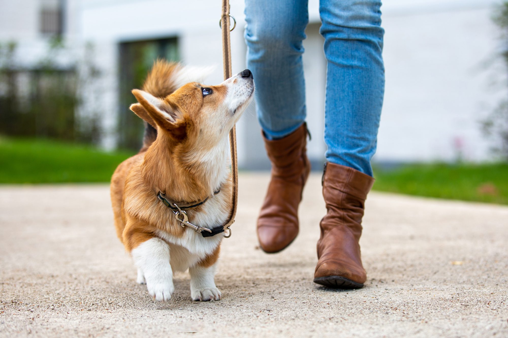
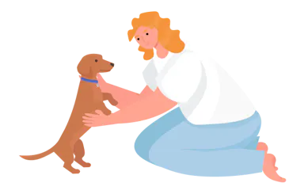

Obedience Training
This program helps strengthen the bond with your furry companion and unlock their full potential! It includes:
- Name Recognition & Come Command
- Leash training and Heel walking
- Basic command training - Sit, Stay, Roll, Hi five/shake hand
- Behavioural training - separation anxiety, food aggression, house manners, etc.
- Rest and Sleep Training
- Additional monitoring sessions
phno:1234567890
email:test@gmail.com
Leash Training
eash training is a vital skill for any dog owner aiming to ensure their pet's safety and obedience during walks. The process involves gradually introducing the leash to the dog, starting indoors in a calm environment, and using positive reinforcement techniques like treats and praise to associate the leash with positive experiences. Slowly progressing to outdoor environments, owners can teach their dogs to walk calmly beside them without pulling or resisting.

phno:1234567890
email:test@gmail.com
Puppy Board Training
Give your puppy the best start in life by shaping them into a well-behaved and confident companion. Ideal for puppies older than 2 months, this program includes:
- Poop and pee training
- Resolving biting issues
- Name recognition
- Leash and heel walking
- Basic commands training - Sit, Stay, Roll, Hi five/Shake hand
- Behavioural training - separation anxiety, food aggression, house manners, etc.
- Rest & sleep training
- Additional monitoring sessions
phno:1234567890
email:test@gmail.com
Customized Training
Address your dog's specific training needs head-on with our customized training plan!.Customized pet training involves tailoring training programs to meet the specific needs and behaviors of individual pets. By recognizing the unique personality, breed traits, and learning style of each animal, trainers can develop targeted techniques to address obedience, socialization, and behavior modification.

phno:1234567890
email:test@gmail.com